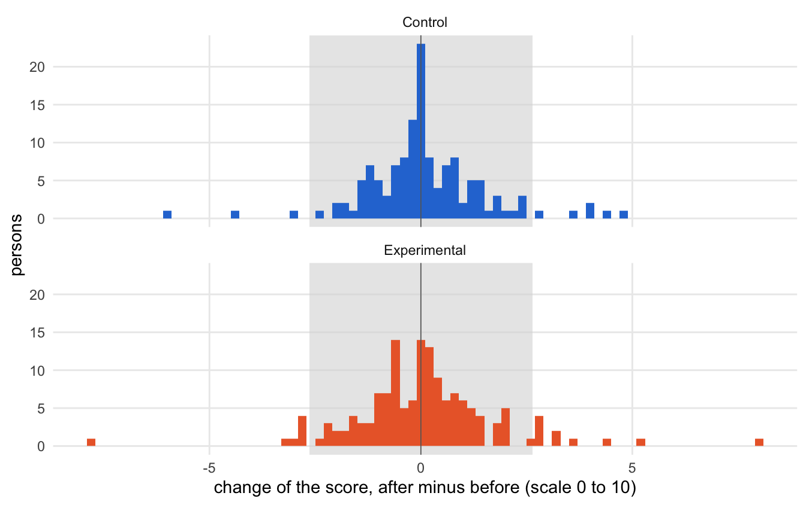
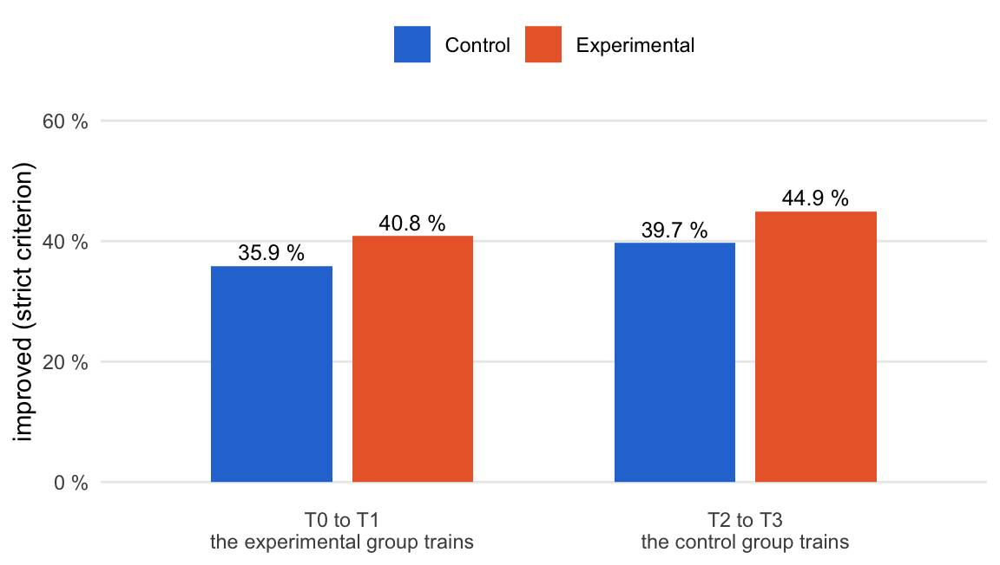
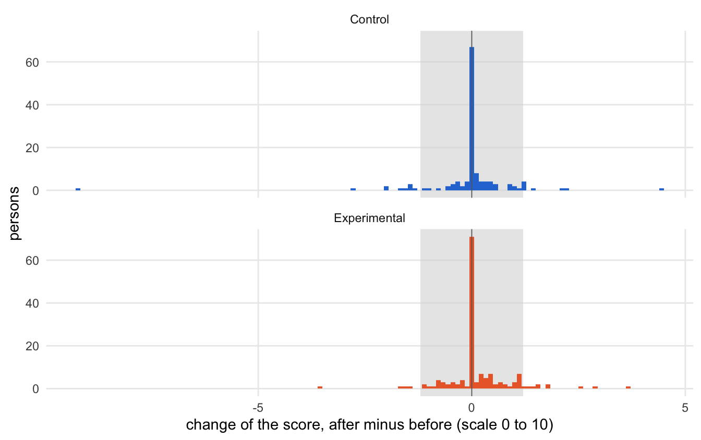
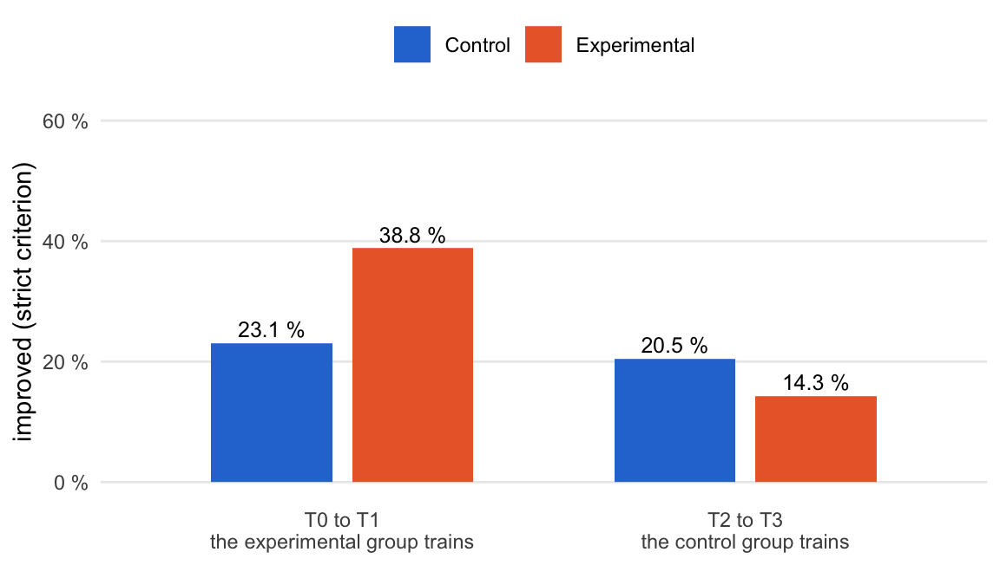

source("R/packages.R") # all packages (Chapter 1)
source("R/settings.R") # waves, conditions, folders (Chapter 1)
df <- readRDS("cache/df.rds") # one row per questionnaire (Chapter 2)
df_wide <- readRDS("cache/df_wide.rds") # one row per person (Chapter 2)
item_names <- names(select(df, ListenOther1:CompetenceNonFrustrated4))
source("R/scales.R") # the 23 scales (Chapter 2)13. Movers
NoteAbout this chapter
Looks at single persons instead of means: who improved, stayed the same or declined between two waves, under three criteria of change. For Tolerance Diversity and Women Attitude, whose means barely moved, it asks whether the trained group improved more often in its own training window. Both scales go through the same seven steps: the score and its reliability, the bands that separate change from no change, the movers while the experimental group trains, the movers from baseline, the rates of improvement in each group’s own training window, the verdict, and what follows. A table at the end puts both scales side by side. Exploratory; feeds a supplementary paragraph of the paper.
13.1 How each score is examined
What happens to each score? The two scales of Hypothesis 2 whose means barely moved (Chapter 9) go through the same seven steps, in the same order and in three parts: the score, the movers, and the verdict. The diagram shows the path; the list below describes each step.
flowchart TB
subgraph SCORE["the score"]
direction LR
S1["<b>Step 1</b><br>the score"] --> S2["<b>Step 2</b><br>the bands"]
end
subgraph MOVERS["the movers: both groups"]
direction LR
S3["<b>Step 3</b><br>T0 to T1"] --> S4["<b>Step 4</b><br>from baseline"]
S4 --> S5{{"<b>Step 5</b><br>each group in<br>its own window"}}
end
V["<b>Steps 6 and 7</b><br>the verdict, what follows"]
SCORE --> MOVERS
MOVERS --> V
classDef both fill:#f0eaf8,stroke:#8e6bbf,color:#1d1d1f
classDef all fill:#efeff2,stroke:#8a8a8a,color:#1d1d1f
classDef verdict fill:#ffffff,stroke:#1d1d1f,color:#1d1d1f
class S1,S2 all
class S3,S4,S5 both
class V verdict
style SCORE fill:#fafafa,stroke:#8a8a8a
style MOVERS fill:#fafafa,stroke:#8a8a8a
The seven steps in detail:
The score:
- The score. Which items enter the score, and how reliable they are in January: Cronbach’s α of all T0 questionnaires. Tolerance Diversity enters with its 5 items, Women Attitude with all 9, including the two items at the ceiling that the score of Chapter 2 leaves out (
womenAttitude_full, Chapter 2.3), so that a change on any item counts. - The bands. A person’s change is the score after minus the score before, for the persons who answered at both waves, here from T0 to T1. Three criteria draw the line between change and no change:
- strict: any difference counts;
- item step: more than one step on one item, 1/k of the scale for k items;
- reliable change (Jacobson & Truax, 1991): more than 1.96 · SDbefore · √(2(1 − α)), with the standard deviation of the scores before, over the persons who answered at both waves, and α of step 1. A change beyond this band is unlikely (p < .05) to come from measurement error alone.
The movers:
- Movers while the experimental group trains. The share of each group that increased, stayed the same or decreased from T0 to T1, under each of the three criteria.
- Movers from baseline. The persons who answered at all four waves (S1, Chapter 3), from T0 to each later wave, under the strict criterion: do the two groups drift apart over the year?
- Each group in its own training window. On the same persons, so that both windows rest on the same people: the share who improved (strict criterion) in each condition, from T0 to T1, while the experimental group trains, and from T2 to T3, while the control group trains. The two shares are compared by a two-proportion χ² test without continuity correction; a difference counts as significant at p < .05. The test needs an expected count of at least 5 in every cell (Cochran, 1954), checked for both windows. A figure shows both windows.
The verdict:
- The verdict. Whether the group in training improves more often than the waiting group in both windows, as an effect of the training would predict, and whether either difference is significant.
- What follows. How the result stands beside the Δd of Chapter 9 and, where Chapter 7 carries the scale on, the latent difference-in-differences of Chapter 11, and where it goes next.
13.2 Data and tools
Which data? The January questionnaires for the reliability (step 1), all questionnaires for the changes from T0 to T1 (steps 2 and 3), the questionnaires of the persons who answered at all four waves (steps 4 to 6), and the effects of the two scales in Chapters 9 and 11 for step 7:
t0 <- filter(df, Occasion == "T0")
complete <- filter(df, s1_complete)
means <- readRDS("cache/means.rds") # Δd (Chapter 9)
smm <- readRDS("cache/smm.rds") # latent DiD (Chapter 11)127 persons answered at all four waves, once at each.
Which tools? The analysis of each step is written out for both scales. Only the two figures use small functions, defined once here; the wording of the items comes from the file that Chapter 6 shows:
# the change of every person, one bar per step on one item and one panel
# per condition; shaded the band of reliable change
plot_changes <- \(changes, band, k) {
changes |>
ggplot(aes(change, fill = condition)) +
annotate("rect", xmin = -band, xmax = band, ymin = -Inf, ymax = Inf,
fill = "grey85", alpha = .6) +
geom_histogram(binwidth = 1 / k, center = 0) +
geom_vline(xintercept = 0, colour = "grey40", linewidth = .3) +
facet_wrap(~ condition, ncol = 1) +
scale_fill_manual(values = c(Control = "#2a78d6",
Experimental = "#eb6834"),
guide = "none") +
labs(x = "change of the score, after minus before (scale 0 to 10)",
y = "persons") +
theme_minimal(base_size = 11) +
theme(panel.grid.minor = element_blank())
}# the share of each group who improved, in the two training windows
plot_rates <- \(rates) {
rates |>
mutate(window = if_else(pre == "T0",
"T0 to T1\nthe experimental group trains",
"T2 to T3\nthe control group trains")) |>
ggplot(aes(window, improved_percent, fill = condition)) +
geom_col(position = position_dodge(width = .7), width = .6) +
geom_text(aes(label = sprintf("%.1f %%", improved_percent)),
position = position_dodge(width = .7), vjust = -.4,
size = 3.3) +
scale_fill_manual(values = c(Control = "#2a78d6",
Experimental = "#eb6834")) +
scale_y_continuous(limits = c(0, 60), labels = \(x) str_c(x, " %")) +
labs(x = NULL, y = "improved (strict criterion)", fill = NULL) +
theme_minimal(base_size = 11) +
theme(legend.position = "top", panel.grid.minor = element_blank(),
panel.grid.major.x = element_blank())
}# the counts a two-proportion test expects in its four cells (improved or
# not, by condition) if both groups improved equally often; the test needs
# at least 5 in every cell (Cochran, 1954)
expected_counts <- \(window) {
observed <- cbind(improved = window$improved,
other = window$persons - window$improved)
outer(rowSums(observed), colSums(observed)) / sum(observed)
}# The wording of every item (English version of the questionnaire), under
# the names of the analysis file (Chapter 2), and the reverse-keyed items
need <- \(numbers) paste0("needSatisfaction", numbers)
wording_names <- c(
"Alienation1" = "NoAlienation1", "Alienation2" = "NoAlienation2",
"Isolation1" = "NoIsolation1", "Isolation2" = "NoIsolation2",
set_names(paste0("AutonomySatisfaction", 1:4), need(c(1, 7, 13, 19))),
set_names(paste0("AutonomyNonFrustrated", 1:4), need(c(2, 8, 14, 20))),
set_names(paste0("RelatednessSatisfaction", 1:4), need(c(3, 9, 15, 21))),
set_names(paste0("RelatednessNonFrustrated", 1:4), need(c(4, 10, 16, 22))),
set_names(paste0("CompetenceSatisfaction", 1:4), need(c(5, 11, 17, 23))),
set_names(paste0("CompetenceNonFrustrated", 1:4), need(c(6, 12, 18, 24)))
)
item_wording <- read_csv("data/item_labels.csv", show_col_types = FALSE) |>
transmute(item = coalesce(wording_names[column_name], column_name),
text = str_squish(label_en))
# answered on the reverse scale and turned around in Chapter 2
reverse_keyed <- c(str_c("NoAlienation", 1:2), str_c("NoIsolation", 1:2),
"Flourishing5", "Flourishing6", str_c("Rogerian", 7:9),
"ToleranceDiversity1",
str_c(rep(c("Autonomy", "Relatedness", "Competence"),
each = 4), "NonFrustrated", rep(1:4, 3)))13.3 Cognitive complexity (H2)
Which scores? Two of the five scales of the second hypothesis: Tolerance Diversity, whose Δd is significant in none of the four windows of Chapter 9, and Women Attitude, whose scores start close to the top of the scale.
Tolerance Diversity
Its path through the steps. One row per step below; Step 1 uses all January questionnaires all questionnaires, the later steps the persons of both groups both groups:
| Step | Question | Result | Next |
|---|---|---|---|
| 1 | How reliable is the score in January? | almost a third of its variance is measurement error | the bands |
| 2 | Where does a reliable change begin? | beyond more than a quarter of the scale | movers |
| 3 | Who moves from T0 to T1? | the experimental group increases somewhat more often | from baseline |
| 4 | Do the groups drift apart over the year? | no | own windows |
| 5 | Does the group in training improve more often? | in the first window, not significantly; in the second, the waiting group does | verdict |
| 6 | The verdict | no sign of an effect of the training | what follows |
| 7 | Where next? | the table of 13.4 and Chapter 20 |
The score · Steps 1 and 2
Step 1 · The score all questionnaires
Which items enter the score? Four statements about Roma/Sinti women and one about meeting people of a different background; item 1 was asked the other way round and turned for the analysis. The score is the mean of all five:
item_wording |>
filter(item %in% scale_items$ToleranceDiversity) |>
mutate(reversed = item %in% reverse_keyed)| item | text | reversed |
|---|---|---|
| ToleranceDiversity1 | Roma/Sinti women threaten the values of Serbia. | TRUE |
| ToleranceDiversity2 | Roma/Sinti women enrich the prosperity of Serbia. | FALSE |
| ToleranceDiversity3 | I would not mind Roma/Sinti women in my residential area. | FALSE |
| ToleranceDiversity4 | I sympathize with Roma/Sinti women. | FALSE |
| ToleranceDiversity5 | I enjoy meeting people whose background is different from mine. | FALSE |
How reliable are the items in January?
tol_alpha <- t0 |>
select(num_range("ToleranceDiversity", 1:5)) |>
psych::alpha() |>
pluck("total", "raw_alpha")
round(tol_alpha, 3)[1] 0.686Cronbach’s α is .69: almost a third of the variance of the score is measurement error. The band of reliable change in step 2 takes it into account.
Next → Step 2, the bands: How much does each person change from T0 to T1?
Step 2 · The bands both groups
How much does each person change from T0 to T1? The persons who answered in January and in March, their score before and after, and its change:
tol_T01 <- df |>
filter(Occasion %in% c("T0", "T1")) |>
select(id, condition, Occasion, value = ToleranceDiversity) |>
pivot_wider(names_from = Occasion, values_from = value) |>
drop_na() |>
rename(before = T0, after = T1) |>
mutate(change = after - before)
tol_T01 |>
summarise(persons = n(),
SD_before = sd(before),
mean_change = mean(change),
.by = condition) |>
arrange(condition) |>
mutate(across(where(is.double), \(x) round(x, 3)))| condition | persons | SD_before | mean_change |
|---|---|---|---|
| Control | 134 | 1.701 | 0.098 |
| Experimental | 147 | 1.706 | 0.067 |
Where does change begin? The three bands: any difference, one step on one of the five items, and the band of reliable change:
tol_step <- 1 / 5 # one step on one of five items
tol_band <- 1.96 * sd(tol_T01$before) * sqrt(2 * (1 - tol_alpha))
c(strict = 0, item_step = tol_step, reliable = tol_band) |>
round(3) strict item_step reliable
0.000 0.200 2.641 plot_changes(tol_T01, band = tol_band, k = 5)
281 persons answered at both waves. Their changes spread widely, from -7.8 to 8.0 points, but most of them are small: a change counts as reliable only beyond ±2.64 points, more than a quarter of the scale, and 91 % of all changes lie within this band (shaded).
Next → Step 3, movers while the experimental group trains: Who moves from T0 to T1?
The movers · Steps 3 to 5
Step 3 · Movers while the experimental group trains both groups
Who moves from T0 to T1? Under each criterion, the persons who increased, stayed the same or decreased, and their share of their group:
tol_movers <- tol_T01 |>
mutate(strict = case_when(change > 0 ~ "increased",
change < 0 ~ "decreased",
.default = "same"),
item_step = case_when(change > tol_step ~ "increased",
change < -tol_step ~ "decreased",
.default = "same"),
reliable = case_when(change > tol_band ~ "increased",
change < -tol_band ~ "decreased",
.default = "same")) |>
pivot_longer(c(strict, item_step, reliable), names_to = "criterion",
values_to = "direction") |>
count(condition, criterion, direction) |>
mutate(percent = round(100 * n / sum(n), 1),
.by = c(condition, criterion))
# persons (and percent of the group) in each direction
tol_movers |>
mutate(cell = sprintf("%d (%.1f %%)", n, percent)) |>
select(criterion, condition, direction, cell) |>
pivot_wider(names_from = direction, values_from = cell) |>
select(criterion, condition, decreased, same, increased) |>
arrange(match(criterion, c("strict", "item_step", "reliable")))| criterion | condition | decreased | same | increased |
|---|---|---|---|---|
| strict | Control | 57 (42.5 %) | 23 (17.2 %) | 54 (40.3 %) |
| strict | Experimental | 64 (43.5 %) | 14 (9.5 %) | 69 (46.9 %) |
| item_step | Control | 48 (35.8 %) | 34 (25.4 %) | 52 (38.8 %) |
| item_step | Experimental | 63 (42.9 %) | 24 (16.3 %) | 60 (40.8 %) |
| reliable | Control | 3 (2.2 %) | 125 (93.3 %) | 6 (4.5 %) |
| reliable | Experimental | 7 (4.8 %) | 130 (88.4 %) | 10 (6.8 %) |
Under the strict criterion almost everyone moves: only 17.2 % of the control group and 9.5 % of the experimental group keep their score exactly. The experimental group increases somewhat more often (46.9 % against 40.3 %), but it decreases as often (43.5 % against 42.5 %). The item step counts a few more persons as unchanged (25.4 % and 16.3 %). The band of reliable change holds 93.3 % of the control group and 88.4 % of the experimental group; beyond it, the experimental group both improves (6.8 % against 4.5 %) and declines (4.8 % against 2.2 %) more often.
Next → Step 4, movers from baseline: How do the persons who answered at every wave move?
Step 4 · Movers from baseline both groups
How do the persons who answered at every wave move? Their four scores side by side, and the change from T0 to each later wave, strict criterion:
tol_complete <- complete |>
select(id, condition, Occasion, value = ToleranceDiversity) |>
pivot_wider(names_from = Occasion, values_from = value)
tol_baseline <- tol_complete |>
pivot_longer(c(T1, T2, T3), names_to = "until", values_to = "after") |>
drop_na(T0, after) |>
mutate(change = after - T0,
direction = case_when(change > 0 ~ "increased",
change < 0 ~ "decreased",
.default = "same")) |>
count(until, condition, direction) |>
mutate(percent = round(100 * n / sum(n), 1), .by = c(until, condition))
# persons (and percent of the group) in each direction
tol_baseline |>
mutate(cell = sprintf("%d (%.1f %%)", n, percent)) |>
select(until, condition, direction, cell) |>
pivot_wider(names_from = direction, values_from = cell) |>
select(until, condition, decreased, same, increased)| until | condition | decreased | same | increased |
|---|---|---|---|---|
| T1 | Control | 30 (38.5 %) | 20 (25.6 %) | 28 (35.9 %) |
| T1 | Experimental | 25 (51.0 %) | 4 (8.2 %) | 20 (40.8 %) |
| T2 | Control | 24 (30.8 %) | 18 (23.1 %) | 36 (46.2 %) |
| T2 | Experimental | 22 (44.9 %) | 6 (12.2 %) | 21 (42.9 %) |
| T3 | Control | 31 (39.7 %) | 12 (15.4 %) | 35 (44.9 %) |
| T3 | Experimental | 24 (49.0 %) | 2 (4.1 %) | 23 (46.9 %) |
Neither group pulls ahead over the year. By March, September and December, 40.8 %, 42.9 % and 46.9 % of the experimental group have increased since January, against 35.9 %, 46.2 % and 44.9 % of the control group. At every wave the experimental group has also decreased more often (51.0 %, 44.9 % and 49.0 %, against 38.5 %, 30.8 % and 39.7 %).
Next → Step 5, each group in its own training window: Does the group in training improve more often?
Step 5 · Each group in its own training window both groups
Does the group in training improve more often? On the same persons: the number who improved and declined from T0 to T1 and from T2 to T3, and the two-proportion test of the share who improved:
tol_window_T01 <- tol_complete |>
drop_na(T0, T1) |>
mutate(change = T1 - T0) |>
summarise(persons = n(),
improved = sum(change > 0),
declined = sum(change < 0),
.by = condition) |>
arrange(condition) |>
mutate(improved_percent = round(100 * improved / persons, 1))
tol_test_T01 <- prop.test(tol_window_T01$improved, tol_window_T01$persons,
correct = FALSE)
tol_window_T23 <- tol_complete |>
drop_na(T2, T3) |>
mutate(change = T3 - T2) |>
summarise(persons = n(),
improved = sum(change > 0),
declined = sum(change < 0),
.by = condition) |>
arrange(condition) |>
mutate(improved_percent = round(100 * improved / persons, 1))
tol_test_T23 <- prop.test(tol_window_T23$improved, tol_window_T23$persons,
correct = FALSE)
tol_windows <- bind_rows(
tol_window_T01 |>
mutate(chisq = unname(tol_test_T01$statistic), p = tol_test_T01$p.value,
pre = "T0", post = "T1"),
tol_window_T23 |>
mutate(chisq = unname(tol_test_T23$statistic), p = tol_test_T23$p.value,
pre = "T2", post = "T3")) |>
relocate(pre, post)
tol_windows |>
mutate(across(c(chisq, p), \(x) round(x, 3)))| pre | post | condition | persons | improved | declined | improved_percent | chisq | p |
|---|---|---|---|---|---|---|---|---|
| T0 | T1 | Control | 78 | 28 | 30 | 35.9 | 0.310 | 0.578 |
| T0 | T1 | Experimental | 49 | 20 | 25 | 40.8 | 0.310 | 0.578 |
| T2 | T3 | Control | 78 | 31 | 35 | 39.7 | 0.329 | 0.566 |
| T2 | T3 | Experimental | 49 | 22 | 19 | 44.9 | 0.329 | 0.566 |
plot_rates(tol_windows)
While the experimental group trains, 40.8 % of its members improve, against 35.9 % of the waiting control group (χ²(1) = 0.31, p = .578). While the control group trains, it improves less often than the experimental group, which now waits (39.7 % against 44.9 %, χ²(1) = 0.33, p = .566).
Does the test apply? The smallest count the test expects in each window, against the 5 it needs in every cell:
tol_expected <- tibble(
window = c("T0 to T1", "T2 to T3"),
smallest = map_dbl(list(tol_window_T01, tol_window_T23),
\(window) min(expected_counts(window)))) |>
mutate(enough = smallest >= 5)
tol_expected |>
mutate(smallest = round(smallest, 1))| window | smallest | enough |
|---|---|---|
| T0 to T1 | 18.5 | TRUE |
| T2 to T3 | 20.4 | TRUE |
Every cell expects at least 18.5 persons in both windows, so the test applies.
Next → Step 6, the verdict: Does the group in training improve more often in both windows?
The verdict · Steps 6 and 7
Step 6 · The verdict
Does the group in training improve more often in both windows? In each window, the share who improved in the group in training and in the waiting group:
tol_verdict <- tol_windows |>
mutate(trains = if_else(pre == "T0", "Experimental", "Control")) |>
summarise(in_training = improved_percent[condition == trains],
waiting = improved_percent[condition != trains],
p = first(p),
.by = c(pre, post)) |>
mutate(as_expected = in_training > waiting,
significant = p < .05)
tol_verdict |>
mutate(p = round(p, 3))| pre | post | in_training | waiting | p | as_expected | significant |
|---|---|---|---|---|---|---|
| T0 | T1 | 40.8 | 35.9 | 0.578 | TRUE | FALSE |
| T2 | T3 | 39.7 | 44.9 | 0.566 | FALSE | FALSE |
Only in the first window does the group in training improve more often, and not significantly; in the second, the waiting group does. At the level of single persons, Tolerance Diversity shows no sign of an effect of the training.
Next → Step 7, what follows: Where does the result go from here?
Step 7 · What follows
Where does the result go from here? Its rates enter the table at the end of this chapter (13.4), from which Chapter 20 counts the significant mover contrasts among the limits of the results. The movers agree with the means: the Δd of Chapter 9 is not significant in either training window (p = .869 and .268), nor is the latent difference-in-differences of Chapter 11 (p = .665 and .577). The mover analysis adds no evidence of an effect of the training on Tolerance Diversity.
Women Attitude
Its path through the steps. One row per step below; Step 1 uses all January questionnaires all questionnaires, the later steps the persons of both groups both groups:
| Step | Question | Result | Next |
|---|---|---|---|
| 1 | How reliable is the score in January? | a third of its variance is measurement error | the bands |
| 2 | Where does a reliable change begin? | scores near the top; a narrow band | movers |
| 3 | Who moves from T0 to T1? | the experimental group increases more often | from baseline |
| 4 | Do the groups drift apart over the year? | the experimental group stays ahead at every later wave | own windows |
| 5 | Does the group in training improve more often? | yes in both windows; neither difference significant | verdict |
| 6 | The verdict | the pattern of an effect, not significant | what follows |
| 7 | Where next? | the table of 13.4 and Chapter 20 |
The score · Steps 1 and 2
Step 1 · The score all questionnaires
Which items enter the score? Nine statements that every woman should be free to choose, from school and work to marriage and children; none is reverse-keyed. The score is the mean of all nine, items 6 and 7 at the ceiling included:
item_wording |>
filter(item %in% scale_items$womenAttitude) |>
mutate(reversed = item %in% reverse_keyed)| item | text | reversed |
|---|---|---|
| womenAttitude1 | Every woman should be free to choose whether to complete secondary school. | FALSE |
| womenAttitude2 | Every woman should be free to choose whether to work for pay. | FALSE |
| womenAttitude3 | Every woman should be free to choose to prioritize her work for pay over domestic duties. | FALSE |
| womenAttitude4 | Every woman should be free to choose what to do with any money that she earns. | FALSE |
| womenAttitude5 | Every woman should be free to choose to purchase land, a house, or other valuable goods. | FALSE |
| womenAttitude6 | Every woman should be free to choose when to get married. | FALSE |
| womenAttitude7 | Every woman should be free to choose to divorce or end her marriage. | FALSE |
| womenAttitude8 | Every woman should be free to choose whether and when to have children. | FALSE |
| womenAttitude9 | Every woman should be free to choose not to have any more children. | FALSE |
How reliable are the items in January?
wom_alpha <- t0 |>
select(num_range("womenAttitude", 1:9)) |>
psych::alpha() |>
pluck("total", "raw_alpha")
round(wom_alpha, 3)[1] 0.665Cronbach’s α is .66, a little lower than for Tolerance Diversity: a third of the variance of the score is measurement error.
Next → Step 2, the bands: How much does each person change from T0 to T1?
Step 2 · The bands both groups
How much does each person change from T0 to T1? The persons who answered in January and in March, their score before and after, and its change:
wom_T01 <- df |>
filter(Occasion %in% c("T0", "T1")) |>
select(id, condition, Occasion, value = womenAttitude_full) |>
pivot_wider(names_from = Occasion, values_from = value) |>
drop_na() |>
rename(before = T0, after = T1) |>
mutate(change = after - before)
wom_T01 |>
summarise(persons = n(),
SD_before = sd(before),
mean_change = mean(change),
.by = condition) |>
arrange(condition) |>
mutate(across(where(is.double), \(x) round(x, 3)))| condition | persons | SD_before | mean_change |
|---|---|---|---|
| Control | 132 | 0.756 | -0.038 |
| Experimental | 148 | 0.741 | 0.143 |
Where does change begin? The three bands: any difference, one step on one of the nine items, and the band of reliable change:
wom_step <- 1 / 9 # one step on one of nine items
wom_band <- 1.96 * sd(wom_T01$before) * sqrt(2 * (1 - wom_alpha))
c(strict = 0, item_step = wom_step, reliable = wom_band) |>
round(3) strict item_step reliable
0.000 0.111 1.199 plot_changes(wom_T01, band = wom_band, k = 9)
280 persons answered at both waves. Their scores sit close to the top of the scale: 51 % start at 10, so the scores before vary little (SD = 0.75), and the band of reliable change is narrow, ±1.20 points, less than half that of Tolerance Diversity. Still, 89 % of all changes lie within it (shaded).
Next → Step 3, movers while the experimental group trains: Who moves from T0 to T1?
The movers · Steps 3 to 5
Step 3 · Movers while the experimental group trains both groups
Who moves from T0 to T1? Under each criterion, the persons who increased, stayed the same or decreased, and their share of their group:
wom_movers <- wom_T01 |>
mutate(strict = case_when(change > 0 ~ "increased",
change < 0 ~ "decreased",
.default = "same"),
item_step = case_when(change > wom_step ~ "increased",
change < -wom_step ~ "decreased",
.default = "same"),
reliable = case_when(change > wom_band ~ "increased",
change < -wom_band ~ "decreased",
.default = "same")) |>
pivot_longer(c(strict, item_step, reliable), names_to = "criterion",
values_to = "direction") |>
count(condition, criterion, direction) |>
mutate(percent = round(100 * n / sum(n), 1),
.by = c(condition, criterion))
# persons (and percent of the group) in each direction
wom_movers |>
mutate(cell = sprintf("%d (%.1f %%)", n, percent)) |>
select(criterion, condition, direction, cell) |>
pivot_wider(names_from = direction, values_from = cell) |>
select(criterion, condition, decreased, same, increased) |>
arrange(match(criterion, c("strict", "item_step", "reliable")))| criterion | condition | decreased | same | increased |
|---|---|---|---|---|
| strict | Control | 28 (21.2 %) | 67 (50.8 %) | 37 (28.0 %) |
| strict | Experimental | 27 (18.2 %) | 71 (48.0 %) | 50 (33.8 %) |
| item_step | Control | 24 (18.2 %) | 79 (59.8 %) | 29 (22.0 %) |
| item_step | Experimental | 26 (17.6 %) | 75 (50.7 %) | 47 (31.8 %) |
| reliable | Control | 10 (7.6 %) | 114 (86.4 %) | 8 (6.1 %) |
| reliable | Experimental | 4 (2.7 %) | 134 (90.5 %) | 10 (6.8 %) |
Under the strict criterion about half of each group keep their score exactly (50.8 % of the control group, 48.0 % of the experimental group), nearly all of them at the top of the scale. The experimental group increases more often (33.8 % against 28.0 %), and the item step widens the gap (31.8 % against 22.0 %). The band of reliable change holds 86.4 % of the control group and 90.5 % of the experimental group; beyond it, both improve about equally often (6.1 % and 6.8 %), but the control group declines more often (7.6 % against 2.7 %).
Next → Step 4, movers from baseline: How do the persons who answered at every wave move?
Step 4 · Movers from baseline both groups
How do the persons who answered at every wave move? Their four scores side by side, and the change from T0 to each later wave, strict criterion:
wom_complete <- complete |>
select(id, condition, Occasion, value = womenAttitude_full) |>
pivot_wider(names_from = Occasion, values_from = value)
wom_baseline <- wom_complete |>
pivot_longer(c(T1, T2, T3), names_to = "until", values_to = "after") |>
drop_na(T0, after) |>
mutate(change = after - T0,
direction = case_when(change > 0 ~ "increased",
change < 0 ~ "decreased",
.default = "same")) |>
count(until, condition, direction) |>
mutate(percent = round(100 * n / sum(n), 1), .by = c(until, condition))
# persons (and percent of the group) in each direction
wom_baseline |>
mutate(cell = sprintf("%d (%.1f %%)", n, percent)) |>
select(until, condition, direction, cell) |>
pivot_wider(names_from = direction, values_from = cell) |>
select(until, condition, decreased, same, increased)| until | condition | decreased | same | increased |
|---|---|---|---|---|
| T1 | Control | 19 (24.4 %) | 41 (52.6 %) | 18 (23.1 %) |
| T1 | Experimental | 9 (18.4 %) | 21 (42.9 %) | 19 (38.8 %) |
| T2 | Control | 15 (19.2 %) | 45 (57.7 %) | 18 (23.1 %) |
| T2 | Experimental | 5 (10.2 %) | 23 (46.9 %) | 21 (42.9 %) |
| T3 | Control | 15 (19.2 %) | 43 (55.1 %) | 20 (25.6 %) |
| T3 | Experimental | 10 (20.4 %) | 21 (42.9 %) | 18 (36.7 %) |
The experimental group has more often increased since January at every later wave: 38.8 %, 42.9 % and 36.7 % by March, September and December, against 23.1 %, 23.1 % and 25.6 % of the control group, more than half of which keeps its January score at each wave (52.6 %, 57.7 % and 55.1 %). The gain of the spring stays, and the control group does not catch up with its own training.
Next → Step 5, each group in its own training window: Does the group in training improve more often?
Step 5 · Each group in its own training window both groups
Does the group in training improve more often? On the same persons: the number who improved and declined from T0 to T1 and from T2 to T3, and the two-proportion test of the share who improved:
wom_window_T01 <- wom_complete |>
drop_na(T0, T1) |>
mutate(change = T1 - T0) |>
summarise(persons = n(),
improved = sum(change > 0),
declined = sum(change < 0),
.by = condition) |>
arrange(condition) |>
mutate(improved_percent = round(100 * improved / persons, 1))
wom_test_T01 <- prop.test(wom_window_T01$improved, wom_window_T01$persons,
correct = FALSE)
wom_window_T23 <- wom_complete |>
drop_na(T2, T3) |>
mutate(change = T3 - T2) |>
summarise(persons = n(),
improved = sum(change > 0),
declined = sum(change < 0),
.by = condition) |>
arrange(condition) |>
mutate(improved_percent = round(100 * improved / persons, 1))
wom_test_T23 <- prop.test(wom_window_T23$improved, wom_window_T23$persons,
correct = FALSE)
wom_windows <- bind_rows(
wom_window_T01 |>
mutate(chisq = unname(wom_test_T01$statistic), p = wom_test_T01$p.value,
pre = "T0", post = "T1"),
wom_window_T23 |>
mutate(chisq = unname(wom_test_T23$statistic), p = wom_test_T23$p.value,
pre = "T2", post = "T3")) |>
relocate(pre, post)
wom_windows |>
mutate(across(c(chisq, p), \(x) round(x, 3)))| pre | post | condition | persons | improved | declined | improved_percent | chisq | p |
|---|---|---|---|---|---|---|---|---|
| T0 | T1 | Control | 78 | 18 | 19 | 23.1 | 3.592 | 0.058 |
| T0 | T1 | Experimental | 49 | 19 | 9 | 38.8 | 3.592 | 0.058 |
| T2 | T3 | Control | 78 | 16 | 16 | 20.5 | 0.787 | 0.375 |
| T2 | T3 | Experimental | 49 | 7 | 12 | 14.3 | 0.787 | 0.375 |
plot_rates(wom_windows)
While the experimental group trains, 38.8 % of its members improve, against 23.1 % of the waiting control group (χ²(1) = 3.59, p = .058), just short of significance. While the control group trains, it improves more often than the experimental group, which now waits (20.5 % against 14.3 %, χ²(1) = 0.79, p = .375).
Does the test apply? The smallest count the test expects in each window, against the 5 it needs in every cell:
wom_expected <- tibble(
window = c("T0 to T1", "T2 to T3"),
smallest = map_dbl(list(wom_window_T01, wom_window_T23),
\(window) min(expected_counts(window)))) |>
mutate(enough = smallest >= 5)
wom_expected |>
mutate(smallest = round(smallest, 1))| window | smallest | enough |
|---|---|---|
| T0 to T1 | 14.3 | TRUE |
| T2 to T3 | 8.9 | TRUE |
Every cell expects at least 8.9 persons in both windows, so the test applies.
Next → Step 6, the verdict: Does the group in training improve more often in both windows?
The verdict · Steps 6 and 7
Step 6 · The verdict
Does the group in training improve more often in both windows? In each window, the share who improved in the group in training and in the waiting group:
wom_verdict <- wom_windows |>
mutate(trains = if_else(pre == "T0", "Experimental", "Control")) |>
summarise(in_training = improved_percent[condition == trains],
waiting = improved_percent[condition != trains],
p = first(p),
.by = c(pre, post)) |>
mutate(as_expected = in_training > waiting,
significant = p < .05)
wom_verdict |>
mutate(p = round(p, 3))| pre | post | in_training | waiting | p | as_expected | significant |
|---|---|---|---|---|---|---|
| T0 | T1 | 38.8 | 23.1 | 0.058 | TRUE | FALSE |
| T2 | T3 | 20.5 | 14.3 | 0.375 | TRUE | FALSE |
In both windows the group in training improves more often, the pattern an effect of the training would leave. Neither difference is significant; the larger one, while the experimental group trains, just misses (p = .058).
Next → Step 7, what follows: Where does the result go from here?
Step 7 · What follows
Where does the result go from here? Its rates enter the table at the end of this chapter (13.4), from which Chapter 20 counts the significant mover contrasts among the limits of the results. The means tell a similar story: on the score without the two items at the ceiling, the Δd of Chapter 9 is not significant while the experimental group trains (p = .094); while the control group trains it is (p = .022), but not after the correction for multiple testing (pBH = .096). A latent difference-in-differences does not exist for this scale: Women Attitude stops in Chapter 7, where no measurement model of the control group is possible. The mover analysis points the same way as the Δd, but adds no evidence of an effect of the training on Women Attitude.
13.4 Both scores at a glance
How do the two scores compare? One row per score: its items and α, the band of reliable change, the share of each group within the band from T0 to T1, and the share who improved in each training window, the group in training against the waiting group, with the p of their difference:
alphas <- c(ToleranceDiversity = tol_alpha, womenAttitude = wom_alpha)
window_rates <- bind_rows(ToleranceDiversity = tol_windows,
womenAttitude_full = wom_windows,
.id = "score")
within_band <- bind_rows(`Tolerance Diversity` = tol_movers,
`Women Attitude` = wom_movers,
.id = "score") |>
filter(criterion == "reliable", direction == "same") |>
select(score, condition, percent) |>
pivot_wider(names_from = condition, values_from = percent,
names_prefix = "within_band_")
training_rates <- bind_rows(`Tolerance Diversity` = tol_verdict,
`Women Attitude` = wom_verdict,
.id = "score") |>
mutate(window = str_c(pre, " to ", post),
result = sprintf("%.1f vs %.1f %% (p = %s)", in_training, waiting,
apa(p, 3))) |>
select(score, window, result) |>
pivot_wider(names_from = window, values_from = result)
tibble(score = c("Tolerance Diversity", "Women Attitude"),
items = c(5L, 9L),
alpha = unname(alphas),
band = c(tol_band, wom_band)) |>
left_join(within_band, by = "score") |>
left_join(training_rates, by = "score") |>
mutate(across(where(is.double), \(x) round(x, 2)))| score | items | alpha | band | within_band_Control | within_band_Experimental | T0 to T1 | T2 to T3 |
|---|---|---|---|---|---|---|---|
| Tolerance Diversity | 5 | 0.69 | 2.64 | 93.3 | 88.4 | 40.8 vs 35.9 % (p = .578) | 39.7 vs 44.9 % (p = .566) |
| Women Attitude | 9 | 0.66 | 1.20 | 86.4 | 90.5 | 38.8 vs 23.1 % (p = .058) | 20.5 vs 14.3 % (p = .375) |
Few persons change reliably: 86 to 93 % of each group stay within the band of their score. No window separates the groups significantly. The largest contrast, Women Attitude while the experimental group trains, points the expected way (p = .058), and in the control group’s window it is the control group that improves its Women Attitude more often; Tolerance Diversity shows no such pattern. Together with the null latent difference-in-differences of Tolerance Diversity (Chapter 11; Women Attitude stops in Chapter 7 and has none), the mover analysis adds no evidence of an effect of the training on either scale.
Chapter 14 returns to the differences between the groups and asks whether the training effects hold when other persons and questionnaires are chosen.
saveRDS(list(alphas = alphas, window_rates = window_rates), "cache/movers.rds")